Highlighted author(s): Sarang Gopalakrishnan
Authors: Ewan McCulloch, J. Alexander Jacoby, Sarang Gopalakrishnan
Type: theory · Category: statistical mechanics · PDF: https://arxiv.org/pdf/2604.27074v1
Analysis basis: full PDF text, analyzed in chunks
Topic relevance: 🔥 non-equilibrium dynamics 4/5 · entanglement & information structure 3/5 · methods for driven-dissipative 3/5 · non-equilibrium universality 3/5 · Keldysh / 2PI / non-Gaussian methods 2/5 · driven-dissipative phase transition 2/5 · scars & prethermalization 2/5
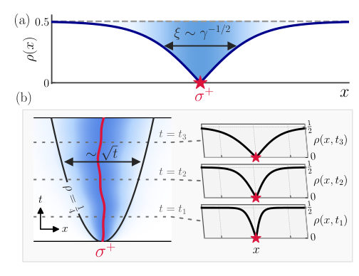
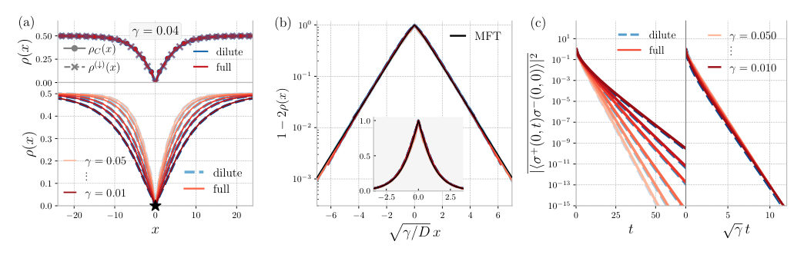
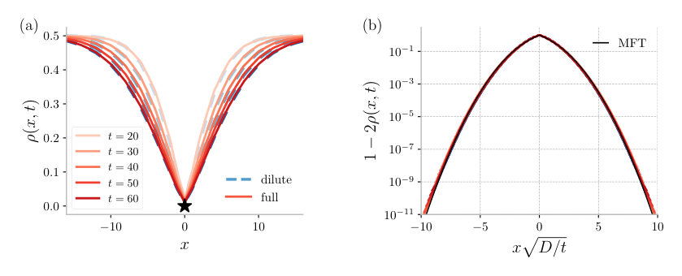
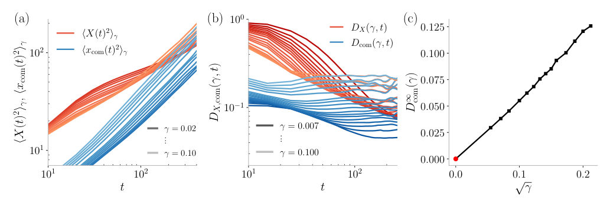
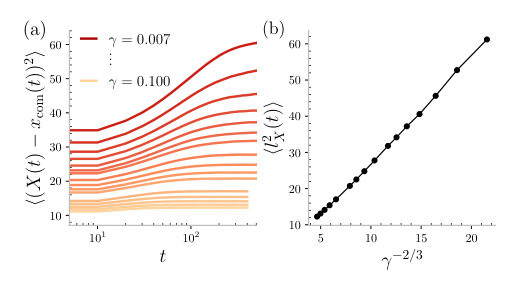
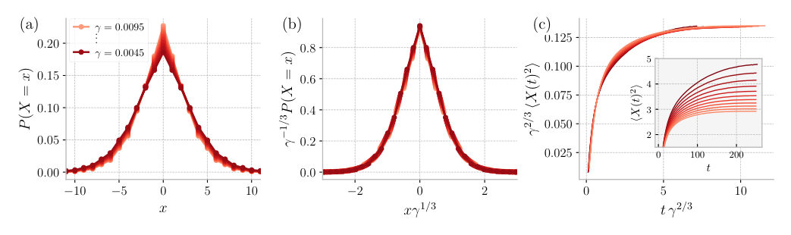
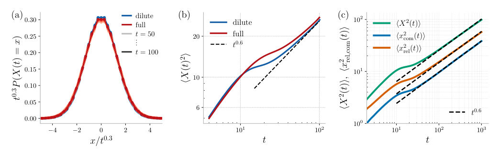
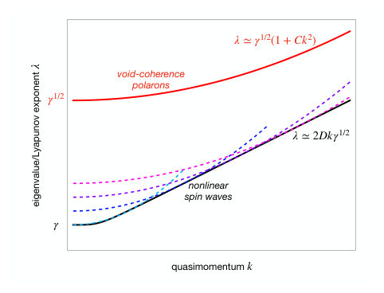
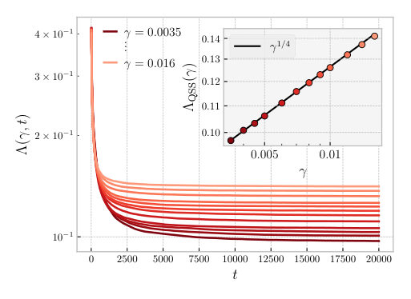
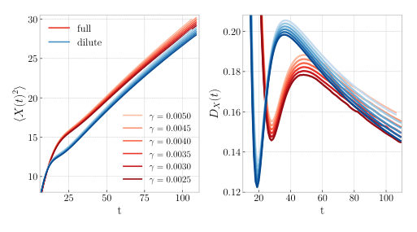
Summary. The paper describes how local quantum coherences in charge-conserving systems are protected from decay by binding to rare, low-entropy hydrodynamic fluctuations called 'voids.' This binding creates a 'polaron-like' object that significantly extends the lifetime of the coherence. The authors provide a complete hydrodynamic theory and verify it with numerical simulations of random circuits.
Why it may be interesting. This work is highly relevant for many-body dynamics and open quantum systems as it provides a non-perturbative description of how dissipation and hydrodynamic fluctuations cooperatively protect quantum information through the formation of stable, collective objects.
Main problem. Understanding how local quantum coherences between distinct charge sectors evolve and decay under generic charge-conserving dynamics, specifically investigating their interaction with hydrodynamic large deviations.
Main result. The authors show that quantum coherences bind to hydrodynamic 'voids' of low charge entropy, forming a collective 'void-coherence polaron' that enhances coherence lifetime; in 1D, the spectral gap vanishes nonperturbatively as the square root of the noise strength.
Method. The study integrates local coherence dynamics into Macroscopic Fluctuation Theory (MFT) using a framework of hydrodynamic large deviations, a two-replica transfer matrix approach, and tensor-network simulations.
Model / system. Generic many-body quantum systems with a conserved U(1) charge, specifically modeled using 1D random charge-conserving circuits and diffusive models like the Symmetric Simple Exclusion Process (SSEP) and the Katz-Lebowitz-Spohn (KLS) model.
Key observables. Single-particle Green's function, charge density profiles, spectral gap of the quantum channel, and the many-body weight (MBW) distribution.
Important parameters / regimes. Noise strength (gamma), diffusion constant (D), mobility (sigma), and the weak-noise vs. noiseless (zero-noise) limits.
Assumptions / limitations. The framework assumes the diffusion constant remains finite at all densities and utilizes a 'dilute coherence approximation' to treat coherences as isolated objects.
Figures summary. Figure 1 shows charge profile evolution; Figure 10 displays coherence-position variance and time-dependent diffusion constants; Figure 12 and 13 show magnon number conservation breakdown and the relaxation of the MBW distribution.
Paper structure. The paper introduces the problem of coherence decay, develops a hydrodynamic framework via MFT, analyzes the polaron formation and spectral gap in the weak-noise limit, investigates the noiseless/aging regime, and validates results via microscopic derivations and tensor-network simulations.
We develop a framework to describe how quantum coherences between distinct charge sectors evolve under generic charge-conserving dynamics. Our framework captures the nonperturbative interactions between quantum coherences and hydrodynamic large deviations -- i.e., rare ``voids'' of low charge entropy. Conditional on surviving, the quantum coherence and its surrounding void form a collective polaron-like object. In one dimension, even at infinite temperature, we show that the lifetime of coherences is parametrically enhanced because they bind to voids. We use our framework to address two fundamental questions about generic quantum dynamics with a conserved charge. First, we argue that gapped Ruelle-Pollicott resonances are absent in the weak-noise limit, even in sectors of operator space that contain no hydrodynamic slow modes: instead, the spectral gap in all sectors vanishes nonperturbatively in the noise strength. Second, we compute the spacetime asymptotics of the dynamical single-particle Green's function, both in the weak-noise regime and in the absence of noise. In the noiseless case, we find that the void-coherence polaron undergoes subdiffusion, with an exponent we calculate. We support our general arguments with a microscopic derivation for random charge-conserving circuits, as well as numerical evidence from tensor-network simulations.
Highlighted author(s): Nigel R. Cooper
Authors: Sebastian J. Morris, Martin Gazo, Simon M. Fischer, Haoyu Zhang, Christopher J. Ho, Nigel R. Cooper, Christoph Eigen, Zoran Hadzibabic
Type: experiment · Category: quantum gases · PDF: https://arxiv.org/pdf/2604.28191v1
Analysis basis: abstract only; PDF text extraction failed or PDF unavailable
Topic relevance: 🔥 non-equilibrium dynamics 4/5 · non-equilibrium universality 3/5
Summary. This paper reports the observation of decaying quantum turbulence in a 3D atomic Bose-Einstein condensate. By measuring the decay of vortex line density, the authors demonstrate that the system follows Vinen ultraquantum turbulence predictions. The results show that the large-scale dynamics of these compressible gases mimic incompressible hydrodynamic fluids.
Why it may be interesting. It provides experimental evidence for how far-from-equilibrium quantum fluids relax through the decay of vortex tangles, linking the dynamics of weakly interacting atomic gases to the universal behavior seen in strongly interacting superfluid helium.
Main problem. Understanding the relaxation and decay of quantum turbulence in far-from-equilibrium, homogeneous 3D Bose-Einstein condensates.
Main result. The researchers observed the decay of vortex line-length density and found it follows the predictions for Vinen 'ultraquantum' turbulence, behaving like an incompressible hydrodynamic fluid despite the gas being highly compressible.
Method. Matter-wave techniques were used to magnify the gas density distribution, followed by imaging a thin slice of the magnified cloud to detect vortex line imprints.
Model / system. A homogeneous 3D atomic Bose gas in a far-from-equilibrium state, characterized by a turbulent tangle of randomly oriented vortex lines.
Key observables. Vortex line-length density (L)
Important parameters / regimes. Vortex line-length density, interatomic interaction strength, and the regime of Vinen ultraquantum turbulence.
Assumptions / limitations. The large-scale dynamics of the weakly interacting, highly compressible gas can be treated as an incompressible hydrodynamic fluid.
Paper structure. The paper describes the observation of decaying quantum turbulence, the experimental method of magnification and imaging, the measurement of vortex density, and a comparison of the decay dynamics to Vinen turbulence and superfluid helium.
Relaxation of far-from-equilibrium quantum fluids, intimately related to the emergence of long-range order, is theoretically associated with the decay of a turbulent isotropic tangle of vortex lines. We observe and study such decaying quantum turbulence in a homogeneous 3D atomic Bose gas. Using matter-wave techniques to magnify the gas density distribution, and then imaging a thin slice of the magnified cloud, we observe imprints of randomly oriented vortex lines and measure the vortex line-length density $\mathcal{L}$. The observed decay of $\mathcal{L}$ agrees with the prediction for Vinen `ultraquantum' turbulence. Although our weakly interacting gases are highly compressible, their large-scale dynamics are consistent with the behavior of an incompressible hydrodynamic fluid, with the decay of $\mathcal{L}$ not depending on the strength of the interatomic interactions and being similar to that in the strongly interacting superfluid helium.
Authors: Zheng Liu, Ding-hui Xu, Yi-jia Yang, Chang-shui Yu
Type: theory · Category: other · PDF: https://arxiv.org/pdf/2604.27608v1
Analysis basis: full PDF text, analyzed in chunks
Topic relevance: 🔥 spintronics-quantum-optics interface 5/5 · 🔥 quantum measurements 4/5 · non-equilibrium dynamics 3/5 · Keldysh / 2PI / non-Gaussian methods 2/5 · Tavis-Cummings & cavity-many-emitter 2/5 · methods for driven-dissipative 2/5 · entanglement & information structure 1/5
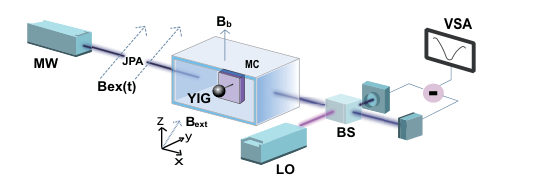
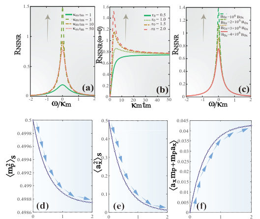
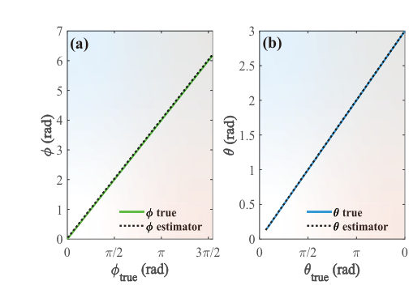
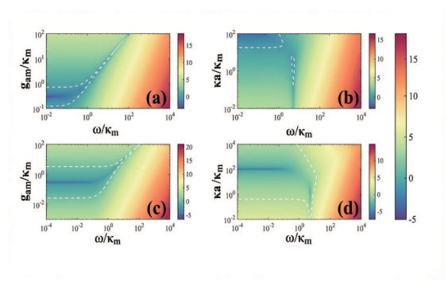
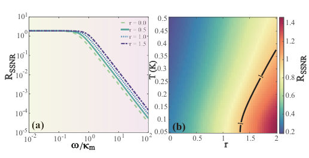
Summary. This paper proposes a transient quantum sensing method for cavity-magnon systems that outperforms steady-state protocols. By utilizing initial quantum correlations and injected squeezing, the framework enables high-precision, 3D reconstruction of magnetic field vectors. The approach also demonstrates a resonance condition where cavity-induced noise can be effectively canceled.
Why it may be interesting. It provides a novel approach to quantum-limited sensing by exploiting non-equilibrium transient dynamics and engineered initial states to surpass steady-state precision limits.
Main problem. Conventional steady-state cavity-magnon magnetometry is limited by the loss of initial-state quantum information, inability to detect arbitrary field orientations, and sensitivity to cavity-added noise.
Main result. A transient sensing framework is developed that uses residual initial quantum correlations to enhance SNR and enables 3D magnetic field reconstruction via crosstalk-free quadrature measurements.
Method. The authors use Heisenberg-Langevin equations and input-output relations to model transient dynamics, employing a double-difference scheme for vector reconstruction and injected squeezing for noise suppression.
Model / system. A cavity-magnon system consisting of a microwave cavity coupled to one or more Yttrium Iron Garnet (YIG) spheres, interacting with a 3D magnetic field pulse.
Key observables. Cavity field amplitude and phase quadratures, transient noise spectrum, and signal-to-noise ratio (SNR).
Important parameters / regimes. Cavity and magnon decay rates (kappa_a, kappa_m), coupling strength (g_am), squeezing amplitude (r), and the resonance condition g_am = sqrt(kappa_a * kappa_m)/2.
Assumptions / limitations. Assumes a delta-function magnetic field pulse and a specific noise power spectral density for weak magnetic fields.
Figures summary. Fig 2 shows SNR vs frequency and quadrature detection; Fig 5 shows stationary SNR vs frequency and temperature/squeezing thresholds.
Paper structure. The paper introduces the problem of steady-state limitations, describes the transient framework and 3D reconstruction method, analyzes noise suppression via squeezing and resonance, and discusses scalability with multiple YIG spheres.
We present a transient quantum sensing framework for cavity-magnon systems that circumvents the inevitable loss of initial-state quantum properties plaguing conventional steady-state protocols. Explicitly incorporating finite-time dynamics and adopting an engineered steady state as the initial condition, we derive the exact transient noise spectrum. We show that residual initial quantum correlations alone can drastically enhance the short-time signal-to-noise ratio (SNR) beyond that achievable with unsqueezed steady-state schemes. Through analysis of the transient spectral density and joint measurements of orthogonal cavity quadratures, we realize crosstalk-free reconstruction of all three magnetic field components, enabling orientation of magnetic signals. In the long-time limit, our theory yields a closed-form stationary noise spectrum and uncovers a resonance condition $g_{am}=\sqrt{κ_aκ_m}/2$, where cavity field quantum noise is fully canceled without requiring strong coherent coupling. Away from this resonance, injected squeezing further suppresses cavity induced noise and broadens the detection bandwidth. Extending the framework to an array of $N$ yttrium iron garnet (YIG) spheres generates a collective bright mode, with magnon-probe noise scaling as $1/N$. Our results establish a unified route to scalable, high precision, multidimensional quantum magnetometry using cavity-magnon platforms.
Authors: Shinichi Inoue, Rui Li, Kentaro Kubo, Yinghao Ho, Yasunobu Nakamura, Hayato Goto
Type: experiment · Category: quantum information and computing · PDF: https://arxiv.org/pdf/2604.27679v1
Analysis basis: full PDF text, analyzed in chunks
Topic relevance: 🔥 QC/QI experiment 5/5 · non-equilibrium dynamics 2/5
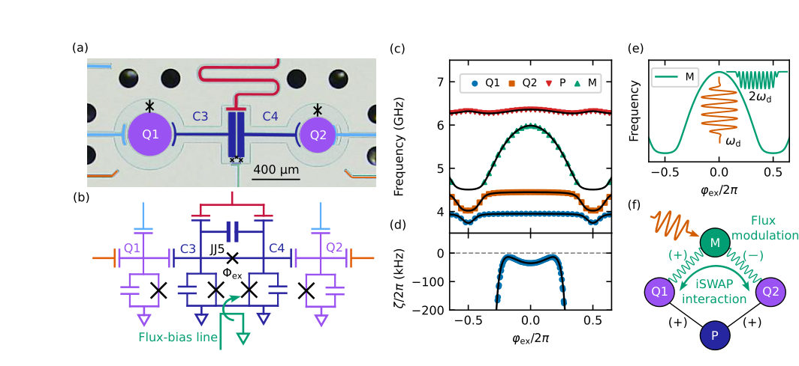
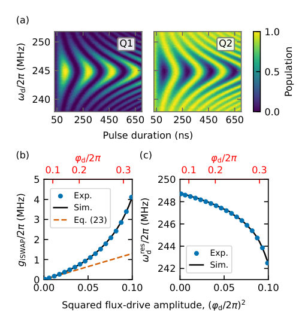
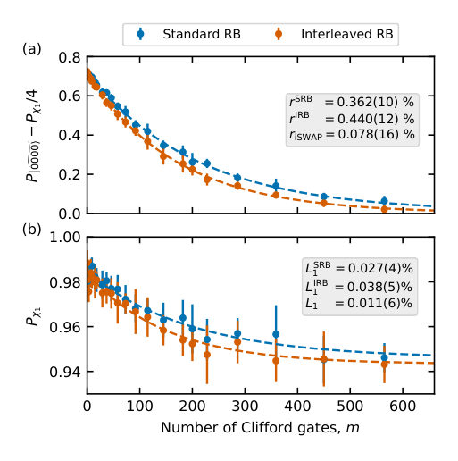
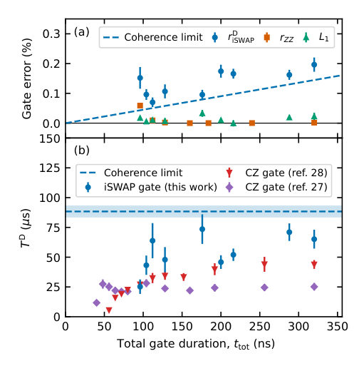
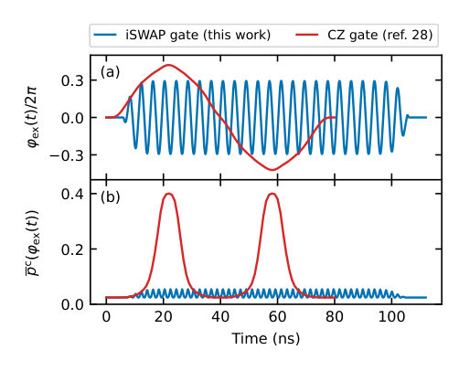
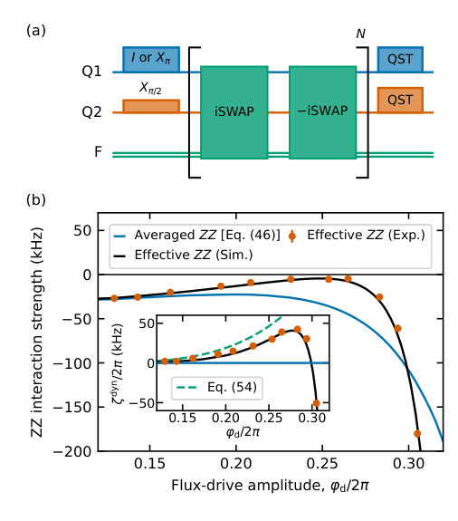
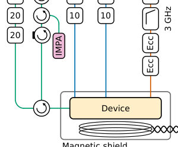
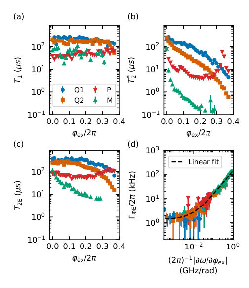
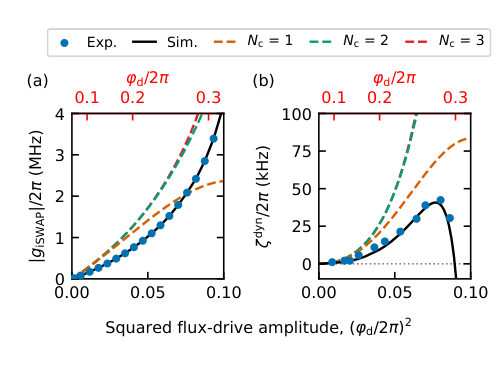
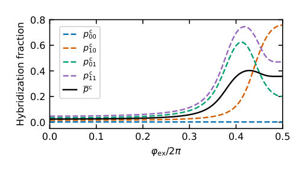
Summary. The researchers implemented a high-fidelity iSWAP gate between fixed-frequency transmons using a specialized capacitively shunted coupler. By operating at the zero-flux sweet spot and using parametric driving, they significantly reduced decoherence and unwanted ZZ interactions. This approach enables faster, more scalable two-qubit gates for superconducting quantum processors.
Why it may be interesting. The paper demonstrates a method for controlling many-body-like interactions (exchange and ZZ) via parametric driving and provides insights into managing qubit-coupler hybridization, which is relevant to open quantum systems and circuit QED.
Main problem. Achieving high-fidelity two-qubit iSWAP gates in superconducting circuits while minimizing unwanted ZZ interaction, leakage, and qubit-coupler hybridization caused by large flux pulses.
Main result. Demonstrated a high-fidelity (99.92%) parametrically driven iSWAP gate at the zero-flux sweet spot with a gate time of 112 ns, achieving ZZ suppression through a combination of static and dynamical mechanisms.
Method. Experimental implementation using a capacitively shunted double-transmon coupler (CSDTC) with an AC flux drive, characterized via randomized benchmarking (SRB, IRB, LRB) and calibrated using software-based virtual-Z frame updates.
Model / system. A superconducting circuit consisting of two highly detuned, fixed-frequency transmon qubits coupled via a Capacitively Shunted Double-Transmon Coupler (CSDTC) that hybridizes into symmetric and antisymmetric modes.
Key observables. Average gate fidelity, leakage rate, iSWAP interaction strength, effective ZZ interaction, and hybridization fraction.
Important parameters / regimes. Gate fidelity of 99.92(2)%, gate time of 112 ns, zero-flux sweet spot operation, and hybridization fraction of approximately 0.05.
Assumptions / limitations. The analysis assumes the ability to compensate for phase errors via software frame updates and uses a three-level approximation to explain dynamical ZZ interaction.
Figures summary. Fig 1 shows the device micrograph, circuit diagram, and energy spectrum; Fig 2 shows chevron patterns for population exchange; Fig 3 displays gate and leakage error extraction; Fig 4 compares error scaling with gate duration; Fig 5 compares iSWAP and CZ waveforms; Fig 6 shows experimental vs simulated ZZ interaction; Fig 14/15 show PTM reconstruction and readout IQ clusters.
Paper structure. The paper introduces the hardware problem, describes the CSDTC architecture and parametric driving mechanism, presents experimental gate fidelity and error budget analysis, details the suppression of ZZ interaction, explains the calibration/phase-tracking protocol, and concludes with readout characterization.
A double-transmon coupler (DTC) enables a fast, high-fidelity CZ gate between two highly detuned, fixed-frequency transmon qubits. Moreover, a recently proposed capacitively shunted DTC (CSDTC) realizes a small residual ZZ interaction over a wide flux-bias range around zero flux, eliminating the necessity of static flux biasing while maintaining high CZ-gate fidelity. However, CZ gates with the DTC and CSDTC require baseband flux pulses with large amplitudes, which are vulnerable to pulse distortion and decoherence due to large qubit-coupler hybridization. To address these issues, we experimentally demonstrate a parametrically driven iSWAP gate operated at zero flux bias between highly detuned, fixed-frequency transmon qubits coupled through a CSDTC. Using a simple flux-drive waveform without predistortion, we realize an average gate fidelity of 99.92(2)% at a total gate time of 112 ns. The observed high-fidelity performance is consistent with small qubit-coupler hybridization and small effective ZZ interaction during the gate. Our numerical simulations reproduce the experimentally observed iSWAP interaction rate and effective ZZ interaction, demonstrating the applicability of the theoretical model not only to spectral information but also to time-domain dynamics such as gate operations. These results boost further progress in the research of superconducting quantum computers.
Authors: Phattharaporn Singkanipa, Victor Kasatkin, Daniel A. Lidar
Type: both · Category: quantum information and computing · PDF: https://arxiv.org/pdf/2604.27457v1
Analysis basis: full PDF text, analyzed in chunks
Topic relevance: 🔥 QC/QI experiment 5/5
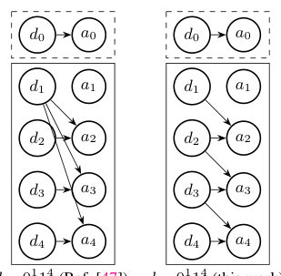
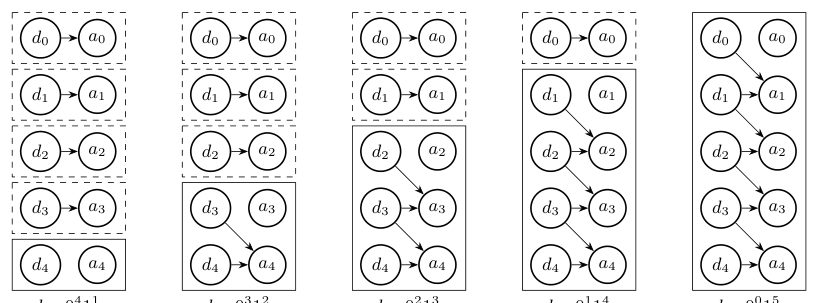
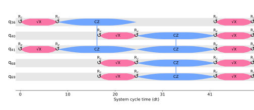
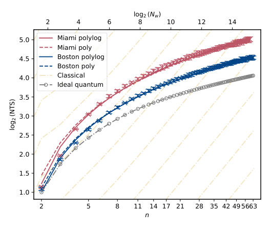
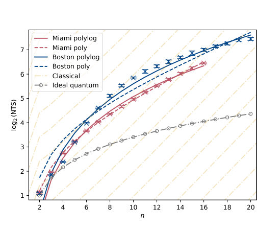
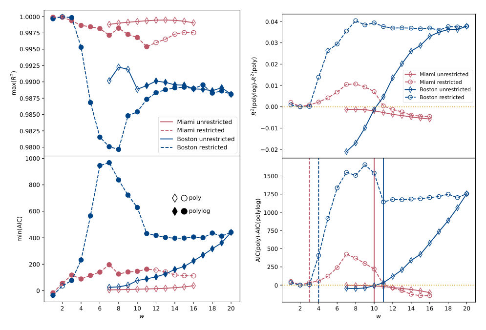
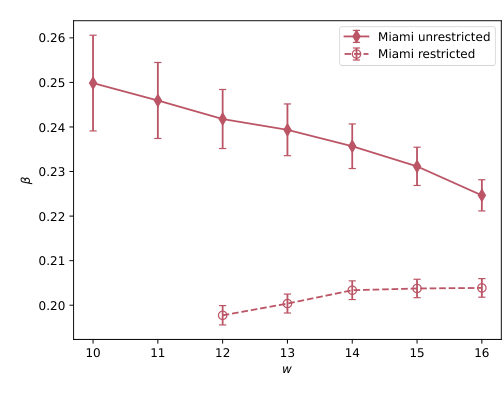
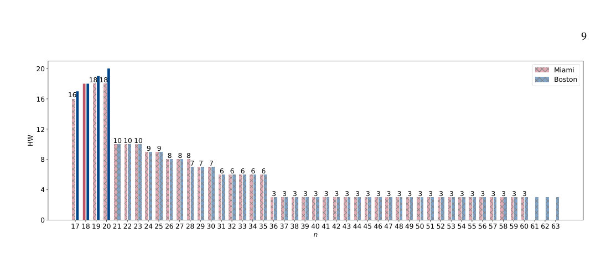
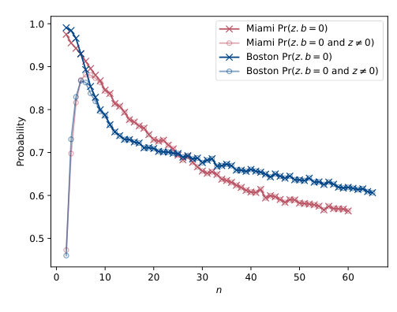
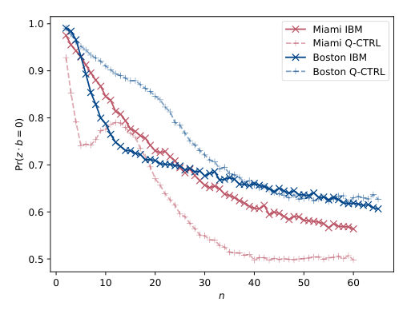
Summary. This paper demonstrates exponential quantum speedup for Simon's problem on real superconducting hardware using a new constant-depth compilation strategy. By making the circuits shallow enough for the NISQ era, the authors show that algorithmic advantage is experimentally accessible even without full error correction.
Why it may be interesting. not directly relevant
Main problem. Demonstrating exponential quantum speedup for a version of Simon's problem on NISQ-era superconducting hardware by overcoming high circuit depth and SWAP overhead.
Main result. The authors achieved exponential quantum speedup on the IBM Boston processor across a wide Hamming-weight range and observed a transition from exponential to polynomial speedup on the IBM Miami processor at higher Hamming weights.
Method. A hardware-aware compilation strategy was developed to reduce the quantum part of the Simon query circuit to constant depth (O(1)) and linear connectivity, mapping directly to the device layout.
Model / system. The experiment was performed on IBM superconducting quantum processors, specifically the 156-qubit 'Boston' (heavy-hex connectivity) and 120-qubit 'Miami' (square-lattice connectivity) devices.
Key observables. Number of queries to solution (NTS), success probability (Pr(z . b = 0)), and scaling exponents (alpha for polylog and beta for poly models).
Important parameters / regimes. Problem size (n), Hamming weight of the hidden bitstring (w), and the scaling regimes (exponential vs. polynomial).
Assumptions / limitations. The study assumes a restricted-Hamming-weight version of Simon's problem and utilizes a factorized-CPTP-map assumption to neglect crosstalk between qubit groups.
Figures summary. Figures illustrate the quantum circuit construction, the reduction of oracle complexity, scaling plots of NTS vs. problem size, and statistical comparisons (AIC/R2) between polylog and poly models.
Paper structure. The paper introduces the problem and hardware-aware compilation method, details the oracle construction and circuit depth reduction, presents experimental results on Boston and Miami processors, performs statistical model selection (polylog vs. poly), and discusses the impact of optimization tools like Q-CTRL.
We demonstrate exponential quantum speedup for a restricted-Hamming-weight version of Simon's problem on present-day superconducting quantum processors by introducing a hardware-aware compilation strategy that compiles the quantum part of each Simon query circuit to constant depth. The resulting compiled circuits have $O(1)$ depth and linear connectivity, map directly onto common device layouts, and avoid additional routing and SWAP overhead. Implemented on IBM's $156$-qubit Boston and $120$-qubit Miami processors, the resulting circuits achieve sufficiently high fidelity to exhibit algorithmic quantum speedup without error suppression. Using the number-of-queries-to-solution metric, we observe exponential speedup over the classical lower bound across the full Hamming-weight range studied on Boston and across low-to-intermediate Hamming weights on Miami; at higher Hamming weights on Miami, we still observe polynomial speedup. The same construction also reaches a regime where the original Simon problem is recovered for the problem sizes studied. These results show that careful hardware-aware compilation can make exponential quantum speedup experimentally accessible for a canonical hidden-subgroup problem in the NISQ regime.
Authors: Denis Bernard, Lorenzo Piroli, Stefano Scopa
Type: theory · Category: statistical mechanics · PDF: https://arxiv.org/pdf/2604.28151v1
Analysis basis: full PDF text, analyzed in chunks
Topic relevance: 🔥 entanglement & information structure 4/5 · 🔥 non-equilibrium dynamics 4/5 · correlated / nonlocal dissipation 3/5 · non-equilibrium universality 3/5 · Keldysh / 2PI / non-Gaussian methods 2/5 · driven-dissipative phase transition 2/5 · methods for driven-dissipative 2/5
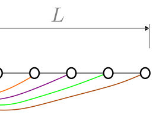
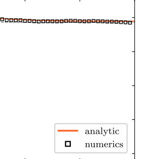
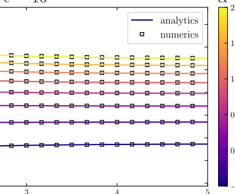
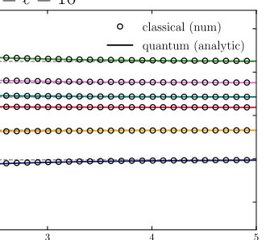
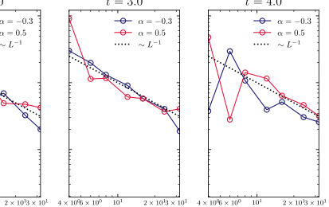
Summary. This paper provides an analytical framework to study the melting of a domain wall in the all-to-all quantum symmetric simple exclusion process using random matrix theory. It demonstrates that the quantum and classical charge statistics are identical in the thermodynamic limit and provides exact expressions for the evolution of entanglement entropy. The work highlights the emergence of classical-like transport from underlying quantum dynamics in large-scale systems.
Why it may be interesting. This paper is highly relevant for researchers in many-body dynamics and open quantum systems as it provides exact analytical solutions for entanglement and transport in a non-equilibrium, all-to-all interacting quantum system, establishing a direct link between quantum and classical stochastic processes.
Main problem. Characterizing the real-time dynamics of coherent quantum fluctuations and the melting of an initial domain wall in the all-to-all Quantum Symmetric Simple Exclusion Process (QSSEP).
Main result. The authors show that the eigenvalues of the correlation matrix evolve according to a Jacobi process, and that in the thermodynamic limit, the quantum and classical full-counting statistics of the charge coincide without finite-time corrections.
Method. The study employs Random Matrix Theory (RMT), mapping the evolution of the correlation matrix to a Jacobi process, and uses Itô calculus and Gaussian state formalism to derive analytic solutions.
Model / system. The system is an all-to-all Quantum Symmetric Simple Exclusion Process (QSSEP), also known as the charged SYK2 model, consisting of spinless fermions on a fully connected graph with stochastic unitary dynamics.
Key observables. von Neumann entanglement entropy, Rényi entanglement entropy, and full-counting statistics (FCS) of the charge.
Important parameters / regimes. Thermodynamic limit (L to infinity), subregion size ratio (theta), particle density ratio (zeta), and the domain-wall regime (M = l = L/2).
Assumptions / limitations. The analysis assumes the thermodynamic limit, the self-averaging of spectral observables, and specific smoothness/boundedness conditions for the functions of eigenvalues.
Figures summary. Figure 1 illustrates the all-to-all hopping setup; Figure 2 shows the analytic prediction for entropy density dynamics matching numerical simulations; Figure 5 demonstrates the L^-1 scaling of finite-size deviations between quantum and classical processes.
Paper structure. The paper introduces the all-to-all QSSEP model, maps the correlation matrix dynamics to a Jacobi process using RMT, derives analytic expressions for entanglement entropy and charge statistics, compares quantum and classical dynamics, and analyzes finite-size corrections and self-averaging properties.
We study the melting of a domain wall in the quantum simple exclusion process with all-to-all hoppings (a.k.a. the charged SYK$_2$ model). We show that the real-time dynamics of physical quantities of interest can be obtained exploiting spectral results in random matrix theory. We first show that the eigenvalues of the correlation matrix corresponding to the initially charged subsystem evolve according to a Jacobi process, which is defined in terms of a closed system of stochastic differential equations. In turn, this observation allows us to obtain the real-time dynamics of all the eigenvalue moments. We present two physical applications. First, we study the dynamics of the averaged von Neumann entanglement entropy, arriving at a fully explicit expression in the thermodynamic limit. Second, we compute analytically the full-counting statistics of the charge. Our formula allows us to perform a thorough comparison with the full-counting statistics of the classical simple exclusion process. Notably, we show that, in the thermodynamic limit, the quantum and classical full-counting statistics coincide, with no finite-time corrections.
Authors: Dmitriy Yavorskiy, David Hagenmuller, Noureddine Charrouj, Yurii Ivonyak, Alexander Kazakov, Yanko Todorov, Wojciech Knap, Marcin Bialek
Type: both · Category: other · PDF: https://arxiv.org/pdf/2604.28042v1
Analysis basis: full PDF text, analyzed in chunks
Topic relevance: 🔥 correlated cavity matter 4/5 · 🔥 quantum optics experiment 4/5 · Dicke superradiance 3/5 · driven-dissipative phase transition 3/5 · Tavis-Cummings & cavity-many-emitter 2/5
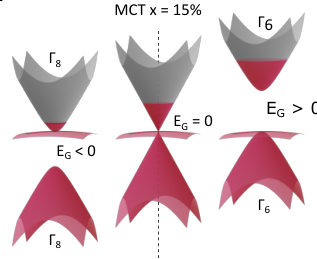
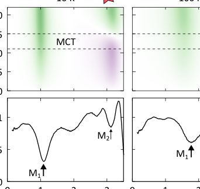
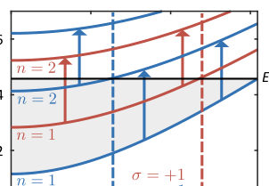
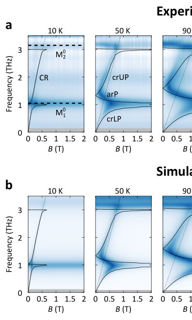
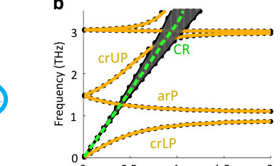
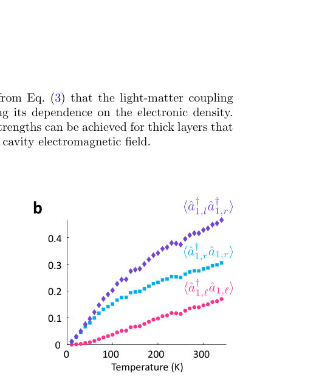
Summary. The study achieves record-breaking deep strong light-matter coupling in 3D Kane fermions at room temperature. It resolves a long-standing debate by showing that a diamagnetic term naturally emerges to prevent a superradiant phase transition. This work opens new avenues for developing polaritonic semiconductor devices in extreme coupling regimes.
Why it may be interesting. It addresses a fundamental debate in cavity QED regarding gauge invariance and the existence of phase transitions in light-matter systems with relativistic-like matter, while demonstrating extreme non-perturbative coupling regimes.
Main problem. Resolving the controversy regarding whether a superradiant quantum phase transition can occur in relativistic-like electronic systems (Dirac/Kane fermions) due to the potential absence of the diamagnetic A^2 term.
Main result. Demonstrated the deep strong-coupling regime with a record coupling ratio exceeding 1.6 at room temperature and proved that a gauge-invariant A^2 term emerges, precluding the superradiant phase transition.
Method. THz time-domain spectroscopy in reflection mode combined with a gauge-invariant microscopic quantum model and transfer-matrix simulations.
Model / system. 3D Kane fermions in a bulk Mercury Cadmium Telluride (MCT) layer coupled to a Fabry-Perot resonator, modeled using a Hopfield-like Hamiltonian derived via a projected unitary gauge transformation.
Key observables. Reflectivity spectra, electric field spectra, cyclotron resonance transitions, and polariton dispersion.
Important parameters / regimes. Normalized coupling ratio (eta > 1.6), temperature-dependent carrier density, magnetic field, and the ultralow effective mass of Kane fermions.
Assumptions / limitations. Low-excitation regime where electronic transitions are mapped to bosonic operators, and neglect of spin-flip excitations.
Figures summary. Figure 1 shows the temperature evolution of the MCT band structure and carrier density; Figure 2 illustrates the cavity design, electric field distribution, and temperature-dependent cavity modes.
Paper structure. The paper introduces the deep strong-coupling problem, describes the MCT/cavity experimental platform, presents THz spectroscopy results, details the microscopic gauge-invariant theoretical model, and concludes by resolving the superradiant phase transition controversy.
Deep strong light-matter coupling represents an extreme non-perturbative regime of quantum electrodynamics, in which the interaction strength exceeds the bare frequencies of the uncoupled systems. The ground state features strong quantum correlations between photons and matter excitations, and new cavity-driven phase transitions are expected to occur. Whether a superradiant quantum phase transition, marked by spontaneous dipole ordering and photon condensation, is possible has remained a long-standing and controversial question. Such phenomena have been proposed to arise in exotic electronic systems hosting Dirac and Kane fermions, owing to the formal absence of an $A^2$ term in their low-energy Hamiltonian. Here we exploit the ultralow effective mass of Kane fermions to realise Landau polaritons in a bulk mercury cadmium telluride layer coupled to a Fabry-Perot resonator. Using thermally tunable carrier density, we continuously tune the coupling from the weak to the deep-strong regime, achieving a record normalised coupling ratio exceeding 1.6 above room temperature. The measured polariton spectra are in excellent agreement with a rigorous, gauge-invariant microscopic theory. Despite the nonlinear Landau level structure of relativistic Kane fermions, we show that a diamagnetic $A^2$ term naturally emerges and precludes a superradiant phase transition. These results resolve the long-standing controversy surrounding cavity quantum electrodynamics of relativistic-like matter systems, extend deep-strong-coupling physics to Kane fermions, and open new opportunities for polaritonic semiconductor devices operating in extreme light-matter coupling regimes.
Authors: Davood Marripour, Jahanfar Abouie
Type: theory · Category: disordered systems and neural networks · PDF: https://arxiv.org/pdf/2604.27250v1
Analysis basis: abstract only; PDF text extraction failed or PDF unavailable
Topic relevance: 🔥 non-equilibrium dynamics 4/5 · 🔥 scars & prethermalization 4/5 · driven-dissipative phase transition 3/5 · entanglement & information structure 3/5 · non-equilibrium universality 2/5
Summary. This paper demonstrates that a spin chain driven by two incommensurate frequencies can exhibit a stable, prethermal time quasicrystalline phase. The research shows that this temporal order is robust against perturbations and can be enhanced by specific disorder configurations. This provides a potential platform for creating long-lived nonequilibrium states in driven quantum systems.
Why it may be interesting. It explores a novel form of temporal order (TQC) that extends beyond standard Floquet theory, providing insights into how quasiperiodic driving and disorder can be used to engineer long-lived, non-equilibrium phases and suppress heating in many-body systems.
Main problem. The study investigates the emergence and stability of prethermal time quasicrystalline (TQC) order in a spin chain subjected to quasiperiodic driving.
Main result. The authors demonstrate that quasiperiodic driving leads to quasiperiodic time-translation symmetry breaking (QTTSB) with robust spectral peaks and suppressed heating, a phase that is stable against perturbations and enhanced by asymmetric disorder distributions.
Method. The study utilizes exact diagonalization to analyze the dynamics of the spin chain.
Model / system. A non-interacting spin-1/2 chain with disordered Ising interactions (randomly chosen from a symmetric interval) and a random transverse field, driven by a two-part periodic drive consisting of a switching mechanism and a rotating transverse magnetic field with an incommensurate frequency.
Key observables. Time autocorrelation function, dynamical structure factor, and entanglement entropy (EE).
Important parameters / regimes. Driving frequencies (omega_d and Omega), the irrational ratio omega_d/Omega, the high-frequency regime, and the symmetry/asymmetry of the Ising exchange coupling distribution.
Assumptions / limitations. The system is treated as a non-interacting spin chain; the study focuses on the high-frequency regime to observe prethermal effects.
Paper structure. The paper introduces the quasiperiodically driven model, describes the numerical methodology (exact diagonalization), presents results for spectral features and entanglement entropy, analyzes the effects of disorder asymmetry and perturbations, and concludes with the implications for nonequilibrium temporal order.
We study prethermal time quasicrystalline (TQC) order in a quasiperiodically driven chain of non-interacting spin-1/2 particles. The drive consists of two parts, switched on and off periodically with frequency $ω_d$: (i) disordered Ising interactions, with exchange couplings chosen from a symmetric interval $[-J/2, J/2]$, allowing random antiferromagnetic or ferromagnetic nearest-neighbor couplings, together with a random transverse field; and (ii) a rotating transverse magnetic field with frequency $Ω$. The ratio $ω_d/Ω$ is chosen to be irrational, producing multiple incommensurate frequencies and yielding quasiperiodic dynamics beyond Floquet theory. Using exact diagonalization, we analyze the time autocorrelation function, dynamical structure factor, and entanglement entropy (EE). In the high-frequency regime, robust spectral peaks at incommensurate frequencies (not integer multiples of the fundamental drives) signal quasiperiodic time-translation symmetry breaking (QTTSB). The EE exhibits sublinear power-law growth followed by a prethermal plateau, indicating suppressed resonant heating due to an energy scale mismatch. The nonequilibrium lifetime increases rapidly with driving frequency. Unlike symmetric disorder sampling, an asymmetric distribution of the Ising exchange couplings induces collective spin rigidity, enhancing the system's resistance to heating. The TQC phase remains stable against next-nearest-neighbor (NNN) exchange perturbations and rotational imperfections, with robustness comparable to discrete time crystals (TCs) under periodic driving. Our results establish this quasiperiodically driven system as a platform for long-lived nonequilibrium temporal order, revealing the interplay of disorder, collective rigidity, and quasiperiodic driving.
Authors: Jia-Xin Zhong, Chang Shu, Nan Cheng, Jee Woo Kim, Kai Zhang, Kai Sun, Yun Jing
Type: both · Category: other · PDF: https://arxiv.org/pdf/2604.27585v1
Analysis basis: full PDF text, analyzed in chunks
Topic relevance: 🔥 driven-dissipative phase transition 4/5 · 🔥 non-equilibrium universality 4/5 · analog quantum simulation 3/5 · non-equilibrium dynamics 3/5 · correlated / nonlocal dissipation 2/5
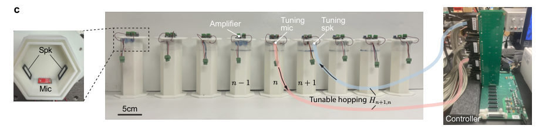
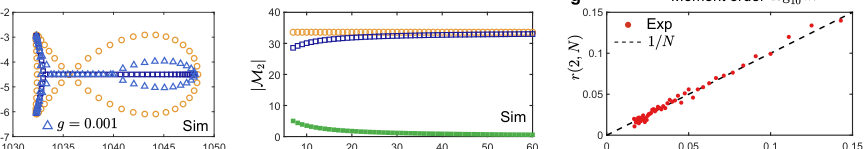
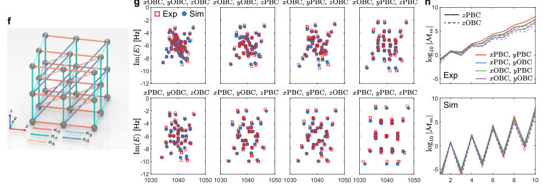
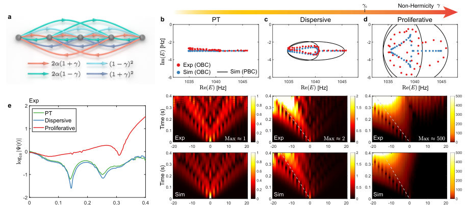
Summary. The paper shows that while the energy spectra of non-Hermitian systems change drastically with boundary conditions, their spectral moments remain nearly invariant and reflect the true bulk physics. By using an acoustic platform, the authors verify a universal scaling law for finite-size errors and discover a new dynamical phase transition driven by bulk properties.
Why it may be interesting. This work is highly relevant to open quantum systems and many-body dynamics as it provides a new way to extract intrinsic bulk properties from finite-size non-Hermitian systems, decoupling local stability from boundary-induced spectral fluctuations.
Main problem. How to characterize intrinsic bulk physics in non-Hermitian systems when the Non-Hermitian Skin Effect (NHSE) causes the complex spectrum to be extremely sensitive to boundary conditions and geometry.
Main result. The authors demonstrate that spectral moments are boundary-robust descriptors of bulk physics and establish a universal scaling law for finite-size deviations. They also reveal a dynamical transition from dispersive to proliferative regimes governed by bulk moments rather than boundary-sensitive spectra.
Method. The study uses an active acoustic metamaterial platform for full spectral reconstruction and time-domain wave-packet tracking. They employ Green's-function-based spectroscopy and a loop-counting theory to analyze 1D, 2D, and 3D lattices.
Model / system. A unified acoustic metamaterial platform implementing non-Hermitian tight-binding models in 1D, 2D, and 3D. The system uses electro-acoustic feedback loops to control non-reciprocal hopping amplitudes and on-site potentials.
Key observables. Complex energy spectra, spectral moments (up to 10th order), relative deviation between boundary conditions, and wave-packet amplitude evolution.
Important parameters / regimes. Boundary coupling strength (g), system size (L or N), moment order (m), non-reciprocity/non-Hermiticity parameter (gamma), and hopping amplitudes.
Assumptions / limitations. The loop-counting theory assumes a regime where on-site potentials dominate over off-diagonal terms (|H_ii| >> |H_{i != j}|) for certain scaling predictions.
Figures summary. Fig 1: Concept of spectral moments, loop-counting logic, and acoustic lattice photo. Fig 2: 1D lattice spectra under varying boundary conditions, moment invariance, and finite-size scaling. Fig 3: 2D and 3D lattice implementations and higher-dimensional scaling.
Paper structure. Introduction of the boundary sensitivity paradox, presentation of the acoustic platform, demonstration of spectral moment invariance in 1D, derivation and verification of finite-size scaling laws, extension to 2D and 3D geometries, and investigation of the dynamical dispersive-to-proliferative transition.
In non-Hermitian systems, spectra can be maximally boundary-sensitive, yet bulk physics need not be. Here we experimentally show that spectral moments provide boundary-robust bulk observables in finite non-Hermitian lattices, even when the spectra undergo dramatic geometry-dependent reshaping due to the skin effect. Using a unified acoustic platform with full spectral reconstruction and time-domain access, we probe one-, two- and three-dimensional lattices and demonstrate that spectral moments remain nearly invariant across distinct boundary geometries while the corresponding complex spectra differ strongly. To connect the thermodynamic theorem to realistic finite systems, we develop a loop-counting theory that identifies the physical origin of finite-size deviations in terms of missing boundary loops, quantitatively captures the corrections, and predicts a scaling law, which we verify experimentally. Beyond acoustic spectroscopy, we reveal a counterintuitive dynamical consequence of moment invariance: a dispersive-to-proliferative bulk transition governed by bulk moment structure rather than spectral boundary sensitivity. As a result, local bulk dynamics can remain stable (dispersive) even in a $\mathcal{PT}$-broken spectral regime, challenging the conventional expectation that $\mathcal{PT}$ breaking necessarily implies feedback-induced dynamical instability (proliferation) through exponentially amplifying spectral components. These results establish spectral moments as practical bulk descriptors for finite non-Hermitian matter and open a route to extracting and controlling intrinsic bulk behavior in realistic wave-based non-Hermitian devices.
Authors: Hao Wu, Qichun Liu, Yuanbin Fan, Yulong Liu, Qing Zhao
Type: both · Category: other · PDF: https://arxiv.org/pdf/2604.27668v1
Analysis basis: full PDF text, analyzed in chunks
Topic relevance: 🔥 driven-dissipative phase transition 4/5 · 🔥 spintronics-quantum-optics interface 4/5 · non-equilibrium dynamics 3/5 · quantum optics experiment 3/5
Summary. This paper demonstrates that using an active, self-oscillating cavity allows for the observation of complex nonlinear phenomena like frequency combs and chaos in magnon-polaritons at microwatt power levels. This significantly reduces the power threshold compared to traditional passive systems. The findings open new avenues for low-power nonlinear microwave signal generation, high-precision sensing, and neuromorphic computing.
Why it may be interesting. This work is highly relevant to researchers in open quantum systems and quantum optics as it demonstrates a platform for studying non-equilibrium phase transitions, nonlinear cavity QED, and complex attractor dynamics in a highly efficient, low-power regime.
Main problem. The difficulty of experimentally observing and controlling transitions between distinct nonlinear attractors (such as bistability, frequency combs, and chaos) in conventional passive magnon-polariton systems, which typically require high-power milliwatt-class external drives.
Main result. The observation of controlled attractor transitions, including the explosive growth of bistability and a full route to chaos, achieved at extremely low microwatt-level power levels using an active magnon-polariton platform.
Method. The researchers used a self-oscillating microwave cavity coupled to a YIG sphere, employing stability analysis of fixed points and numerical simulations (Runge-Kutta) to map the nonlinear dynamics and compare them with experimental transmission and emission spectra.
Model / system. An active magnon-polariton system consisting of a 1-mm YIG sphere coupled to a microstrip-line cavity with a BJT-based gain element acting as a van der Pol oscillator, incorporating Kerr nonlinearity and Suhl-mediated magnon-magnon scattering.
Key observables. Frequency offset of the oscillator, emission spectra (single-peak, multi-frequency, frequency combs, and chaos), transmission spectra (S21), and magnetic-field-triggered spectral shifts.
Important parameters / regimes. Microwatt-level drive power (-35 to -10 dBm), spin-photon coupling strength (g), photon and magnon damping rates (kappa, gamma), and DC-controlled gain (G).
Assumptions / limitations. The system is modeled using a semiclassical mean-field approach with complex mode amplitudes.
Figures summary. Fig 1 compares active vs. passive models and shows simulated phase diagrams; Fig 2 details the experimental setup and magnetic field dependence; Fig 4 shows the progression of nonlinear regimes and frequency offsets; Fig 5 presents the power-dependent stability phase diagram and a comparison of power efficiency with previous studies.
Paper structure. The paper introduces the problem of high-power requirements in passive systems, describes the active experimental architecture, presents the theoretical model and stability analysis, details the experimental observation of various nonlinear regimes (from limit cycles to chaos), and concludes with applications in sensing and computing.
Magnon-polaritons provide a room-temperature platform for investigating nonlinear cavity quantum electrodynamics in the microwave domain, but experimentally observing controlled transitions among distinct nonlinear attractors remains challenging in conventional passive systems, where strong external driving is usually required. Here we report the observation of attractor transitions in an active magnon-polariton formed by a self-oscillating microwave cavity coupled to a yttrium iron garne (YIG) sphere. The feedback loop supplies an internal microwave drive, while Kerr frequency pulling and Suhl-mediated magnon-magnon scattering produce an enhanced effective nonlinearity. Stability analysis using experimentally calibrated parameters reveals a rich fixed-point (FP) landscape with multiple unstable-FP phases and a triple-point region. By tuning gain across these phases, we observe the first experimental evidence of explosive growth of bistability, followed by transitions to multifrequency limit cycles, comb-like/fractal spectra, and broadband chaotic dynamics at microwatt powers. Near a critical point, magnetic-field-triggered switching between nonlinear emission states produces spectral shifts up to 162 times the bare gyromagnetic response. By enabling low-power attractor transitions and attractor-switching-amplified spectral response, active magnon-polaritons open opportunities for nonlinear microwave signal generation, high-precision sensing, and neuromorphic computing.
Authors: Ze-Shan He, Yukuan Zhao, Hao-Shu Tian, Kai Sun, Xiao-Ye Xu, Chuan-Feng Li, Guang-Can Guo
Type: experiment · Category: quantum information and computing · PDF: https://arxiv.org/pdf/2604.27567v1
Analysis basis: full PDF text, analyzed in chunks
Topic relevance: 🔥 QC/QI experiment 4/5 · 🔥 quantum optics experiment 4/5 · entanglement & information structure 3/5 · quantum measurements 2/5
Summary. The researchers developed a method to detect entanglement in multi-mode Gaussian states using only intensity correlation measurements. By using high-order moments, they bypassed the need for phase-sensitive reference beams, successfully verifying entanglement in both two-mode and three-mode squeezed states.
Why it may be interesting. This work is highly relevant to quantum optics and quantum information as it provides a scalable, robust method for certifying entanglement in continuous-variable systems without the experimental complexity of homodyne detection or local oscillators.
Main problem. Experimental detection of entanglement in multi-mode Gaussian states without the need for a coherent local oscillator or phase-sensitive measurements.
Main result. Successfully demonstrated entanglement detection for two-mode and three-mode Gaussian states using high-order intensity correlation moments, even when phase information is unavailable.
Method. The authors use high-order (up to sixth-order) intensity correlation moments and the Peres-Horodecki (PPT) criterion, applying mathematical bounds to handle phase-sensitive terms in the three-mode case.
Model / system. The system consists of multi-mode Gaussian states (TMSV and TMGS) generated via spontaneous and cascable parametric down-conversion in cpKTP crystals, detected using a 32-channel pseudo-photon-number-resolving detector made of SNSPDs.
Key observables. High-order intensity correlation moments (up to 6th order), photon-number distributions, symplectic eigenvalues, and joint spectral intensity (JSI).
Important parameters / regimes. Squeezing parameters (r), mean photon numbers, symplectic quantum universal invariants (QUIs), and pump laser purity (g2(0)).
Assumptions / limitations. The states are assumed to be Gaussian; for TMSV, the reduced mode distribution is assumed to be thermal-like; for TMGS, phase-sensitive terms are estimated via upper and lower bounds.
Figures summary. Fig 1 shows the experimental setup; Fig 2 compares simulated and experimental PPT inequality for TMSV; Fig 3 shows symplectic eigenvalues vs squeezing for different pump purities; Fig 4 shows the PPT inequality and experimental results for TMGS.
Paper structure. The paper introduces the problem of phase-insensitive entanglement detection, describes the experimental generation of TMSV and TMGS, details the mathematical derivation of intensity-based entanglement criteria and bounds, presents experimental verification for two-mode and three-mode states, and discusses limitations regarding pump impurity and phase loss.
Quantum universal invariants of a Gaussian state's covariance matrix, which can be derived from intensity correlation moments, have been adopted to characterize the entanglement properties of Gaussian states via the positive partial transpose criterion, also known as the Peres-Horodecki separability criterion. Such intensity correlation moments enable the extraction of information about the covariance matrix without the need for a coherent local oscillator. Here, we experimentally detect the entanglement properties of multimode Gaussian states using high-order\,(up to sixth-order) intensity correlation moments. These multimode Gaussian states are prepared via spontaneous and cascaded parametric down-conversion pumped by a high-peak-energy pulsed laser. Their intensity correlation moments are measured using a pseudo-photon-number-resolving detector constructed through spatial multiplexing of 32 threshold superconducting nanowire single photon detectors. This method is successfully demonstrated for two-mode and three-mode Gaussian states and can be extended to $N$-mode Gaussian states with $N>3$.
Authors: Bidyut Dey, Andrea Nava, Domenico Giuliano
Type: theory · Category: statistical mechanics · PDF: https://arxiv.org/pdf/2604.27072v1
Analysis basis: abstract only; PDF text extraction failed or PDF unavailable
Topic relevance: 🔥 driven-dissipative phase transition 4/5 · non-equilibrium dynamics 3/5 · non-equilibrium universality 3/5 · methods for driven-dissipative 2/5
Summary. This paper explores how different dissipation mechanisms affect phase transitions in coupled quantum Ising models. It demonstrates that while some dissipation leads to standard thermal-like steady states, others create complex non-equilibrium phases, such as reentrant symmetry breaking. This highlights the critical role of the environment's structure in determining many-body dynamics.
Why it may be interesting. It provides fundamental insights into how the microscopic structure of environmental coupling can switch a system between equilibrium-like and genuinely non-equilibrium critical behavior.
Main problem. The study investigates how different types of dissipation mechanisms influence dissipative phase transitions and the nature of steady states in coupled quantum Ising models.
Main result. The authors find that dissipators satisfying detailed balance lead to equilibrium-like steady states and standard phase transitions, whereas local spin-flip dissipators drive the system into a genuinely non-equilibrium regime featuring a reentrant phase.
Method. The study employs a Lindblad master equation approach combined with a self-consistent mean-field framework to analyze the dynamics and steady states.
Model / system. A system of two coupled fully-connected quantum Ising models interacting with an environment, described by a Lindblad master equation.
Key observables. Relaxation dynamics, non-analytic behavior in time (dynamical phase transitions), and the phase diagram of the steady state.
Important parameters / regimes. System-bath coupling strength, Hamiltonian quench protocols (parametric and temperature quenches), and the specific structure of the jump operators.
Assumptions / limitations. The use of a self-consistent mean-field framework to describe the unitary part of the evolution.
Paper structure. The paper compares two classes of dissipators, analyzing the relaxation dynamics and steady-state phase diagrams for both detailed-balance and local-spin-operator-based dissipation.
We study dissipative phase transitions in a system of two coupled fully-connected quantum Ising models interacting with an environment. The dynamics is governed by a Lindblad master equation combining coherent unitary evolution and incoherent dissipative processes, where the unitary part is described within a self-consistent mean-field framework effectively acting on the local Hilbert space of two coupled spins at each site. We analyze two fundamentally different classes of dissipators. In the first case, the jump operators are defined in the instantaneous eigenbasis of the mean-field Hamiltonian and satisfy a detailed-balance condition. In this setting, the relaxation dynamics depends strongly on the quench protocol: a parametric quench of the Hamiltonian leads to conventional relaxation, whereas a temperature quench gives rise to a dynamical phase transition characterized by nonanalytic behavior in time. Yet, in both cases, the system relaxes toward a steady state determined solely by the post-quench parameters and the bath temperature, which closely resembles a thermal Gibbs state of the mean-field Hamiltonian. As a result, the dissipative phase transition occurs at a critical point consistent with the corresponding equilibrium transition. In contrast, when the dissipators are realized via local spin raising and lowering operators, the steady state is genuinely nonequilibrium, leading to a significantly richer phase diagram. In particular, for sufficiently strong system-bath coupling, we observe a reentrant phase featuring a symmetry-broken region bounded by two continuous dissipative phase transitions. Our results evidence how the structure of dissipative processes controls the emergence of equilibrium-like versus genuinely nonequilibrium critical behavior in open quantum systems.
Authors: Timon Schapeler, Fabian Schlue, Isabell Mischke, Michael Stefszky, Benjamin Brecht, Christine Silberhorn, Tim J. Bartley
Type: experiment · Category: quantum information and computing · PDF: https://arxiv.org/pdf/2604.27761v1
Analysis basis: full PDF text, analyzed in chunks
Topic relevance: 🔥 QC/QI experiment 4/5 · 🔥 quantum measurements 4/5 · 🔥 quantum optics experiment 4/5
Summary. The researchers developed a large-scale multiplexed SNSPD detector capable of counting up to 9000 photons with precision exceeding the standard Poisson noise limit. By combining spatial and temporal multiplexing, they bridged the gap between single-photon detection and classical power metering. This advancement is crucial for characterizing large-scale quantum states and improving precision metrology.
Why it may be interesting. This work is highly relevant to quantum optics and precision metrology as it demonstrates a scalable way to characterize large quantum states and provides a new tool for high-sensitivity optical power standards.
Main problem. The difficulty of building detectors that maintain photon-number resolution at high light intensities and bridging the gap between single-photon detectors and high-sensitivity optical power meters.
Main result. Demonstration of macroscopic photon counting from 0 to over 9000 photons, beating the Poisson noise limit by at least 4.1 dB and achieving sub-single-photon precision up to 276 photons per pulse.
Method. A large-scale multiplexed detector using 8 spatial SNSPD bins and 128 temporal modes, combined with model-informed characterization (EMG model) and quantum detector tomography to reconstruct POVMs.
Model / system. An experimental platform consisting of 8 intrinsically photon-number-resolving superconducting nanowire single-photon detectors (SNSPDs) integrated with a 128-bin temporal multiplexing network using fiber delay lines.
Key observables. Photon-number distributions, arrival times, reconstructed POVMs, detector efficiency, and the second-order correlation function g2(0).
Important parameters / regimes. Optical power of ~71 pW, 80 kHz repetition rate, 1024 total detection bins, and photon numbers scaling up to 15,393 per pulse.
Assumptions / limitations. The use of a zero-inflated model to account for detector blinding; the necessity of temporal pulse broadening to mitigate group-velocity dispersion in the fiber network.
Figures summary. Fig 1: Experimental setup schematic and arrival-time histograms; Fig 2: Workflow for photon-number distribution via LUT; Fig 3: Convolution process and uncertainty vs. photon number plots; Fig 4: Ensemble variance and efficiency vs. photon number; Fig 5: POVM matrix heatmap.
Paper structure. The paper introduces the experimental setup and multiplexing architecture, details the characterization and reconstruction methods (LUT and POVM), presents the performance results regarding noise limits and precision, and discusses systematic effects like detector blinding and efficiency-rate dependence.
Photon counting is a cornerstone of quantum optics. Here, we demonstrate precisely counting from 0 to over 9000 photons, beating the Poisson noise limit by at least $4.1~\mathrm{dB}$ across this range. We achieve sub-single-photon precision up to 276 photons per pulse. To do so, we multiplex eight intrinsically photon-number-resolving superconducting nanowire single-photon detectors across 128 temporal modes. We use a model-informed characterization of each of the 1024 detection bins, for optimal precision. We perform quantum detector tomography to reconstruct the positive operator valued measures (POVMs) of the complete device, which consists of $1.38\cdot10^8$ matrix elements. At the repetition rate of our experiment of $80~\mathrm{kHz}$, we can precisely count photons corresponding to an optical power of approximately $71~\mathrm{pW}$, bridging the gap from single-photon measurements to high-sensitivity optical power meters. A photon-number-resolving detector of this size, and the tools used to analyze it, will become increasingly important to characterize large quantum states, as well as tasks in precision metrology and optical power standards.
Authors: Yu Gu, Yuhan Ma, Yiqi Song, Meixue Chen, Hui Chen, Huaibin Zheng, Yuchen He, Yu Zhou, Fuli Li, Zhuo Xu, Jianbin Liu
Type: experiment · Category: quantum information and computing · PDF: https://arxiv.org/pdf/2604.27494v1
Analysis basis: abstract only; PDF text extraction failed or PDF unavailable
Topic relevance: 🔥 quantum optics experiment 4/5 · interference shaping light 3/5 · quantum measurements 3/5 · QC/QI experiment 2/5
Summary. The paper demonstrates that antibunching, typically a nonclassical phenomenon, can be observed using classical thermal light in a Hanbury Brown-Twiss interferometer. This is achieved by using single-photon detectors to perform photon-number projection measurements. The findings help clarify the boundary between classical and quantum correlations in optical systems.
Why it may be interesting. This is highly relevant to quantum optics as it explores the fundamental connection between classical and nonclassical correlations and demonstrates how measurement techniques can reveal nonclassical-like signatures in classical light.
Main problem. Exploring the boundary between classical and nonclassical phenomena by investigating whether antibunching effects can be observed using classical thermal light.
Main result. The researchers demonstrated that antibunching can be observed with thermal light in a Hanbury Brown-Twiss interferometer by utilizing single-photon detectors as photon-number-resolving detectors for photon-number projection measurements.
Method. The study uses a Hanbury Brown-Twiss interferometer setup and treats single-photon detectors as photon-number-resolving detectors to perform photon-number projection measurements on thermal and laser light.
Model / system. A linear interferometer setup (Hanbury Brown-Twiss type) using thermal light and laser light as the input optical states.
Key observables. Temporal and spatial antibunching via the correlation of two detectors detecting one and zero photons, respectively.
Important parameters / regimes. Photon statistics of thermal light and photon-number projection measurement settings.
Assumptions / limitations. The observation relies on the ability to treat single-photon detectors as photon-number-resolving detectors through projection measurements.
Paper structure. The paper introduces the research motivation regarding classical vs nonclassical boundaries, describes the experimental demonstration of antibunching with thermal light, compares thermal and laser light results, and analyzes the classical and nonclassical nature of the observed effects.
Understanding the boundary between classical and nonclassical phenomena is important for both fundamental researches in quantum optics and applications in quantum information. One of the most interesting research directions in this field is exploring nonclassical effects with classical light. In this paper, we will show that it is possible to observe antibunching with thermal light in a Hanbury Brown-Twiss interferometer by treating single-photon detectors as photon-number-resolving detectors to perform photon-number projection measurements. Both temporal and spatial antibunching is observed via the correlation of two detectors detecting one and zero photon, respectively. By comparing the measured results of thermal and laser light, it is found that the observed antibunching arises from the combined effect of photon statistics of thermal light and photon-number projection measurement.The classical and nonclassical nature of the observed antibunching is analyzed. The results are helpful to understand the connection between classical and nonclassical correlation and may find applications in multiphoton interference and quantum imaging.
Authors: Xiao-Kan Guo
Type: theory · Category: statistical mechanics · PDF: https://arxiv.org/pdf/2604.27328v1
Analysis basis: full PDF text, analyzed in chunks
Topic relevance: 🔥 Keldysh / 2PI / non-Gaussian methods 4/5 · 🔥 methods for driven-dissipative 4/5 · non-equilibrium dynamics 2/5 · quantum measurements 2/5
Summary. This paper develops a phase-space framework to describe the semiclassical evolution of open quantum systems using Gaussian mixtures. It successfully decomposes the dynamics of expectation values into reversible, coherent parts and irreversible, diffusive parts. This provides a transparent way to see how classical trajectories emerge from quantum dynamics subject to environmental noise.
Why it may be interesting. It provides a rigorous microscopic link between quantum master equations and classical-like phase-space transport, offering a clear thermodynamic decomposition of work and heat in the context of decoherence.
Main problem. Extending semiclassical Ehrenfest trajectories to open quantum systems to understand how classical trajectories emerge from dynamics involving dissipation and decoherence.
Main result. The derivation of a Fokker-Planck equation for a Gaussian mixture that provides a phase-space interpretation of the generalized Ehrenfest theorem, separating dynamics into coherent (unitary) and irreversible (diffusive) components.
Method. Uses a Gaussian mixture framework in an extended phase space, employing a Lagrangian description and a local harmonic approximation to derive a Fokker-Planck equation and its equivalent Itô stochastic differential equation.
Model / system. Open quantum systems described by a Lindblad master equation, specifically validated using a 1D free particle with a quadratic Hamiltonian and linear Lindblad operators.
Key observables. Expectation values of observables, position and momentum centroids, covariance matrices, and position variance.
Important parameters / regimes. Coupling strength (lambda), mass (m), Planck's constant (hbar), and the 'not-too-squeezed' condition parameter (xi).
Assumptions / limitations. Relies on the local harmonic approximation (truncating Weyl symbols to second order) and requires that Gaussian states do not become too squeezed.
Figures summary. Figure 1 shows the evolution of position variance over time, comparing the analytical quantum solution, a quantum case with diffusion, and a classical comparison without environmental noise.
Paper structure. The paper begins by deriving a Fokker-Planck equation for the mixing measure of a Gaussian mixture, then embeds the generalized Ehrenfest theorem into this phase-space picture, and concludes with a numerical validation using a free-particle model to demonstrate the split between coherent and diffusive dynamics.
We study the semiclassical Ehrenfest trajectories in open quantum systems. We first derive in explicit form the Fokker-Planck equation that governs the time evolution of the mixing measure for a Gaussian mixture. Then, we embed the generalized Ehrenfest theorem recently obtained for open quantum systems into this phase-space picture to study the time evolution of the expectations of observable with respect to the Gaussian mixture. We show how the coherent and irreversible contributions are microscopically separated. Our work provides a transparent phase-space interpretation of the emergence of classical trajectories in open quantum dynamics.
Authors: Runjia Zhang, Akash nag Oruganti, Huy Q Nguyen, Adnan A. E. Hajomer, Vladyslav C. Usenko, Ulrik L. Andersen, Tobias Gehring
Type: both · Category: quantum information and computing · PDF: https://arxiv.org/pdf/2604.27943v1
Analysis basis: full PDF text, analyzed in chunks
Topic relevance: 🔥 QC/QI experiment 4/5 · 🔥 quantum optics experiment 4/5 · quantum measurements 2/5 · entanglement & information structure 1/5
Summary. The researchers demonstrated a 1-to-4 continuous-variable quantum network that can adapt its security level based on whether users are trusted or untrusted. They successfully implemented finite-size security protocols, proving that high-rate quantum key distribution is practical for multi-user telecommunication infrastructures.
Why it may be interesting. The paper demonstrates advanced quantum optical control and signal processing for large-scale quantum communication, which is highly relevant to quantum optics and the development of scalable quantum networks.
Main problem. Scaling point-to-point CV-QKD to multi-user networks while maintaining practical finite-size security and addressing the 'overcounting' of correlations in broadcasting architectures.
Main result. Experimental demonstration of an active 1:4 CV quantum network achieving a total secret key rate of 1.9e-1 bits/channel use with finite-size security over 11 km.
Method. A unified security framework using chain-rule decomposition to attribute joint key rates to individual users across trusted, collaborative, and untrusted protocols, combined with DSP-based phase recovery.
Model / system. An active 1:4 multi-user continuous-variable quantum network using a passive optical network (PON) topology with a 1:4 beam splitter, Gaussian-modulated coherent states, and fiber-optic links up to 11 km.
Key observables. Secret key generation rate (bits/channel use), mutual information, and joint key rate decomposition.
Important parameters / regimes. 1.25e9 exchanged coherent states (finite-size regime), 125 MBaud symbol rate, modulation variance V_M = 5 SNU, and reconciliation efficiency beta = 0.95.
Assumptions / limitations. Security is analyzed under collective attacks; users are categorized into trusted, collaborative, or untrusted scenarios based on their relationship with the adversary (Eve).
Figures summary. Figure 1 illustrates the 1:4 network topology and different trust modes; Figure 3 shows finite-size secret key rates versus the number of signals sent for the three security scenarios.
Paper structure. The paper introduces the multi-user CV-QKD problem, describes the experimental setup and hardware, presents the theoretical security framework for different trust scenarios, reports experimental performance and key rate decomposition, and concludes with a comparison to existing protocols.
In recent years, continuous-variable quantum key distribution (CV-QKD) has become a promising paradigm for enabling secure communication among multiple end users sharing the same telecommunication backbone. CV-QKD with reverse reconciliation naturally enables scalability from conventional point-to-point links to quantum access networks based on passive quantum broadcasting channels. Here, we report an experimental demonstration on an active $1:4$ multi-user CV quantum network (QN) in the finite-size regime. With $1.25\cdot10^9$ coherent states exchanged on each $11\text{km}$ quantum channel, the highest performance for secret key generation totaling $1.9\cdot10^{-1}$ bits/channel use. Furthermore, we investigate adaptable CV-QN protocols that comprehensively allow network operation in various security and key rates requirements of individual users. The results establish the practical security of CV-QN compatible with existing telecommunication for broad deployment, and allowing additional degree of freedom for connected end users in existing infrastructures.
Authors: Sindre Brattegard, Stephanie Matern, Mark T. Mitchison, Saulo V. Moreira
Type: theory · Category: statistical mechanics · PDF: https://arxiv.org/pdf/2604.28155v1
Analysis basis: full PDF text, analyzed in chunks
Topic relevance: 🔥 quantum measurements 4/5 · non-equilibrium dynamics 3/5 · Kondo & dissipative impurity 2/5 · methods for driven-dissipative 2/5
Summary. This paper investigates how the temperature changes in a finite electronic reservoir due to heat exchange with a phonon bath can be used for precise thermometry. It compares different current-based measurement strategies and proves that monitoring individual electron tunneling events is the most optimal method. The findings offer a way to enhance sensing precision in nanoscale transport devices by tuning experimental parameters like gate voltage.
Why it may be interesting. It provides new insights into parameter estimation in non-equilibrium steady states and demonstrates how the thermodynamic properties of finite environments can be leveraged for high-precision sensing in open quantum systems.
Main problem. Developing high-precision thermometry for phonon temperatures in nanoscale transport setups by exploiting the finite heat capacity of electronic reservoirs.
Main result. The study identifies that monitoring individual electron jumps (Strategy I) achieves optimal precision for sensing phonon temperature, and provides an optimization analysis for tuning gate voltage to maximize sensitivity.
Method. The authors combine current metrology techniques with a thermodynamic framework for finite reservoirs, using Fisher information and the Cramér-Rao bound to evaluate different measurement strategies.
Model / system. A quantum dot coupled to a finite-size electronic reservoir, which is itself coupled to a phonon bath and an infinite electronic reservoir, described by a master equation in the weak coupling regime.
Key observables. Monitoring quanta exchanged between the QD and finite reservoir, net particle current through the QD, and QD occupation.
Important parameters / regimes. Electron-phonon coupling exponent (n=3, 5), coupling strengths (xi, zeta), bias voltage (Vb), and gate voltage (Vg).
Assumptions / limitations. Weak coupling regime (Gamma << T), large but finite reservoir, fast internal thermalization (quasiequilibrium), and energy-independent transmission.
Figures summary. Figure 1 shows the experimental setup schematic; Figure 2 displays sensitivity rates as a function of parameters, vanishing at the chemical potential/energy level equality; Figure 3 shows optimization of sensitivity rates via gate voltage tuning.
Paper structure. The paper introduces the problem of finite reservoir thermometry, defines the physical model and transport dynamics, evaluates three measurement strategies using Fisher information, performs an optimization analysis for gate voltage, and provides analytical derivations for the steady-state reservoir properties.
In realistic nanoscale transport set-ups, electron-phonon coupling leads to the exchange of heat between phonon baths and electronic reservoirs with finite heat capacities. Such exchange affects the finite reservoir's temperature. However, this sensitivity of the finite reservoir temperature to the exchange of heat with the finite reservoir has remained unexplored for thermometry. Here, we fill this gap by combining current metrology techniques with a thermodynamic framework encompassing finite reservoirs. We focus on an experimentally realizable set-up with a quantum dot coupled to a finite reservoir and consider two distinct current-based strategies in the long time limit, namely monitoring quanta exchanged between the quantum dot and finite reservoir and the measurement of the total current flowing from the quantum dot into an infinite reservoir. A third strategy involves measurements of the quantum dot occupation. For a large but finite reservoir, we show that the Fisher information for all three strategies captures the finite reservoir's contribution to sensitivity through common factors. We also demonstrate that monitoring quanta exchanged between the system and finite reservoir in the long time limit achieves optimal precision. Finally, we provide an optimization analysis that explores how maximal precision can be achieved within each of the current-based strategies by tuning the gate voltage.
Authors: Sayonee Ray, Jezer Jojo, Jason Iaconis, Abeynaya Gnanasekaran, Apurva Tiwari, Martin Roetteler, Chris Hill, Jay Pathak
Type: both · Category: quantum information and computing · PDF: https://arxiv.org/pdf/2604.28121v1
Analysis basis: full PDF text, analyzed in chunks
Topic relevance: 🔥 QC/QI experiment 4/5 · quantum measurements 3/5 · entanglement & information structure 2/5 · non-equilibrium dynamics 2/5
Summary. This paper presents an advancement in using quantum computers to simulate fluid dynamics through the Quantum Lattice Boltzmann Method. It introduces efficient ways to handle complex 3D flows and boundary conditions while proposing a scalable readout method using classical shadows to overcome hardware noise and measurement bottlenecks.
Why it may be interesting. It demonstrates a practical application of quantum algorithms (QLBM) on real trapped-ion hardware and introduces advanced reconstruction techniques like Shadow-MPS tomography which are highly relevant to many-body state characterization.
Main problem. Advancing the Quantum Lattice Boltzmann Method (QLBM) for realistic 3D fluid dynamics simulations by addressing spatially varying velocity fields, wall boundary conditions, and the readout bottleneck on NISQ hardware.
Main result. Demonstrated 3D spatially varying transport on IonQ trapped-ion hardware, showing that Shadow-MPS tomography significantly outperforms direct histogram reconstruction in scalability and noise robustness.
Method. Implementation of a QLBM pipeline using MPS-based state preparation, streaming and collision operators, and a novel Shadow-MPS tomography approach using randomized single-qubit measurements.
Model / system. The study uses the D3Q7 Lattice Boltzmann model for advection-diffusion on IonQ's trapped-ion systems, specifically the Forte generation and a 64-qubit Barium development system.
Key observables. Particle density distribution (scalar field) and reconstruction fidelity relative to the exact solution.
Important parameters / regimes. Grid sizes ranging from 8^3 to 32^3, relaxation time tau = 1, and measurement shot counts ranging from 1k to 50k.
Assumptions / limitations. Assumes a smooth velocity field to utilize an interpolated Fast Walsh-Hadamard Transform and uses the BGK approximation for collision dynamics.
Figures summary. Figure 1 shows the QLBM pipeline and reconstruction methods; Figure 2 displays 3D density reconstruction and fidelity; Figure 3 shows MPS compression infidelity; Figure 5 illustrates KDE and MPS smoothing; Figure 9 shows the accuracy of the interpolated FWHT; Figure 11 shows 3D species diffusion around a solid cube.
Paper structure. The paper introduces the QLBM framework, details the implementation of spatially varying velocity fields and boundary conditions, presents the new Shadow-MPS tomography method, evaluates performance on IonQ hardware, and discusses scaling and future integration into CFD workflows.
The Quantum Lattice Boltzmann Method (QLBM) has emerged as one of the most promising quantum computing approaches for the numerical simulation of problems in computational fluid dynamics (CFD). The dynamics is formulated in terms of mesoscopic particle distribution functions governed by a discrete Boltzmann transport equation, comprising local streaming and collision operations. In this work, the resulting macroscopic behavior corresponds to the advection-diffusion equation, which we adopt as a canonical model problem for transport phenomena. Building upon recent progress in QLBM implementations, we advance towards more realistic problem settings that better reflect conventional CFD requirements. We address, for the first time, transport under the action of non uniform velocity fields on quantum hardware. We implement our demonstration using IonQ's trapped-ion systems including Forte generation systems and a 64-qubit Barium development system similar to the forthcoming IonQ Tempo line. We identify the density readout and subsequent reloading of the fluid density as a potential bottleneck of the current algorithm and discuss several approaches to mitigate this bottleneck. We identify the use of MPS shadow tomography as a promising method to efficiently scale the readout to large system with complex density distributions. Lastly, we introduce and simulate a novel method to implement wall boundaries for advection-diffusion in QLBM, and discuss the prospects of scaling to higher-complexity problems.
Authors: H. W. Yin, X. J. Liao, Y. H. Xu, P. Huang, K. T. Zhu, T. Wang, G. H. Zeng
Type: experiment · Category: quantum information and computing · PDF: https://arxiv.org/pdf/2604.27299v1
Analysis basis: full PDF text, analyzed in chunks
Topic relevance: 🔥 QC/QI experiment 4/5 · 🔥 quantum optics experiment 4/5 · quantum measurements 2/5
Summary. This paper demonstrates a high-rate CVQKD system that uses a local local oscillator and passive state preparation to overcome the noise and stability issues of transmitted local oscillators. By using a self-referenced pilot scheme, the authors achieved a high-speed secret key rate of over 10 Mbps even through significant atmospheric turbulence. This provides a practical pathway for robust, high-speed quantum communication in realistic free-space environments.
Why it may be interesting. This work is highly relevant to quantum optics and open quantum systems due to its use of thermal state fluctuations for state preparation, the application of temporal-mode theory to continuous-time modes, and the management of decoherence-like effects (phase/frequency drift) in a turbulent channel.
Main problem. Existing Continuous-Variable Quantum Key Distribution (CVQKD) schemes using transmitted local oscillators suffer from high photon leakage noise and instability, making them unsuitable for high-loss free-space channels.
Main result. The authors implemented a Local Local Oscillator (LLO) CVQKD system with self-referenced passive state preparation, achieving a record-high asymptotic secret key rate of 10.34 Mbps over a 23.5 dB loss free-space channel.
Method. The researchers used a thermal light source (ASE) for passive state preparation and a self-referenced pilot scheme (beacon light) to implement high-precision frequency and phase compensation algorithms via digital signal processing.
Model / system. The experimental platform consists of a thermal source (ASE) at Alice's side, a turbulent free-space channel, and a receiver (Bob) using a separate local laser. The system utilizes an Integrated Coherent Receiver (ICR) with 20 GHz bandwidth for heterodyne detection.
Key observables. Secret key rate (SKR), excess noise (including PSP noise, frequency offset, and phase drift), channel transmittance, and signal-to-noise ratio (SNR).
Important parameters / regimes. Repetition rate of 20 GHz, channel loss up to 23.5 dB, detection bandwidth of 20 GHz, and a thermal source with a second-order correlation function near 2.
Assumptions / limitations. The demonstration is a proof-of-principle; the experiment used simplified coupling efficiency losses rather than full atmospheric complexity, and data processing was performed offline.
Figures summary. Figure 1 shows the system schematic; Figure 2 details the experimental setup for Alice and Bob; Figure 3 shows the optical layout; Figure 5 displays complex power spectra before and after frequency correction; Figure 6 and 7 show transmittance, noise components, and key rate performance under turbulence.
Paper structure. The paper introduces the challenge of CVQKD in free space, proposes a new LLO-PSP scheme, provides a theoretical proof of equivalence to GMCS protocols, describes the experimental setup and DSP algorithms, analyzes noise and key rates, and concludes with future outlooks.
Continuous-variable quantum key distribution (CVQKD) using passive state preparation (PSP) offers low-cost, high-rate secure communication. However, the existing PSP-CVQKD scheme with a transmitted local oscillator has high photon leakage noise and poor stability, making it unsuitable for high-loss transmission. In this work, for the first time, we propose and implement a local local oscillator (LLO) CVQKD system using a self-referenced (SR) PSP scheme, and give a theoretical proof of the equivalence of the PSP and GMCS protocol using temporal-mode theory. By employing the novel self-referenced pilot scheme to achieve high-precision time-varying frequency and phase compensation algorithms, we significantly improve the system' s signal-to-noise ratio and stability. The system achieves a record-high asymptotic secret key rate of 10.34 Mbps over a free-space channel with up to 23.5 dB loss, while maintaining low excess noise and robust performance under turbulent conditions. This work establishes the feasibility of SR-LLO CVQKD, providing a practical pathway toward secure, high-rate quantum communication in realistic environments.
Authors: Kristian Blom, Doron Benyamin, Uwe Thiele, Oren Raz, Aljaz Godec
Type: theory · Category: statistical mechanics · PDF: https://arxiv.org/pdf/2604.28117v1
Analysis basis: full PDF text, analyzed in chunks
Topic relevance: 🔥 non-equilibrium dynamics 4/5 · driven-dissipative phase transition 2/5 · non-equilibrium universality 2/5 · scars & prethermalization 2/5
Summary. The paper demonstrates that the strong Mpemba effect in an antiferromagnetic Ising model is driven by whether a temperature quench excites the system's slowest relaxation mode. This effect is specifically tied to the presence of reentrant phase transitions, which occur when the lattice coordination number is sufficiently high.
Why it may be interesting. This paper is highly relevant to many-body dynamics as it establishes a fundamental link between equilibrium phase topology (reentrance) and non-equilibrium relaxation anomalies (Mpemba effect) using spectral analysis of relaxation modes.
Main problem. Investigating the origin of the strong direct and inverse Mpemba effects in the context of reentrant phase transitions.
Main result. The strong Mpemba effect arises from the selective excitation of the slowest relaxation mode (staggered mode) during temperature quenches, a phenomenon linked to the non-monotonic phase boundaries found in systems with high coordination numbers.
Method. The study uses the Bethe-Guggenheim (pair) approximation to derive macroscopic dynamical equations and employs spectral decomposition of the Jacobian matrix to analyze relaxation modes.
Model / system. An antiferromagnetic Ising model on a Bethe lattice with a uniform magnetic field, governed by single-spin-flip Glauber dynamics.
Key observables. Sublattice magnetizations (ma, mb), total magnetization (m), staggered magnetization (s), nearest-neighbor correlation (q), and excess free energy (D(t)).
Important parameters / regimes. Temperature (T), magnetic field (H), coordination number (z), and exchange interaction (J).
Assumptions / limitations. The results are based on the Bethe-Guggenheim pair approximation, which assumes nearest-neighbor pairs are randomly distributed and may not capture higher-order correlations.
Figures summary. Figure 1 compares equilibrium order parameters and phase diagrams for low (z=3, monotonic) vs. high (z=7, reentrant) coordination numbers; Figure S1 shows the long-time decay of excess free energy for the inverse Mpemba protocol.
Paper structure. The paper introduces the problem of anomalous relaxation, defines the Ising model and BG approximation, analyzes the equilibrium phase behavior (reentrance), derives the linearized dynamics and spectral properties, and concludes by linking the Mpemba effect to the existence of reentrant phase boundaries.
We investigate temperature quenches across the reentrant phase transition of the antiferromagnetic Ising model in a magnetic field and show that the strong direct and inverse Mpemba effects arise when quenches terminate in the paramagnetic phase. These anomalous relaxation phenomena originate from the selective excitation of the slowest relaxation mode, which in the paramagnetic phase is purely staggered. Consequently, quenches starting from the paramagnetic phase have zero overlap with the slow mode and exhibit a strong (inverse) Mpemba effect. Quenches from the antiferromagnetic phase excite the staggered mode and display a slow-relaxation tail. By varying the lattice coordination number we show that the strong Mpemba effect disappears in the absence of reentrance. Our results provide the first demonstration of the strong (inverse) Mpemba effect in the antiferromagnetic Ising model based on the pair-approximation, and establish a link between anomalous relaxation and the equilibrium phase behavior.